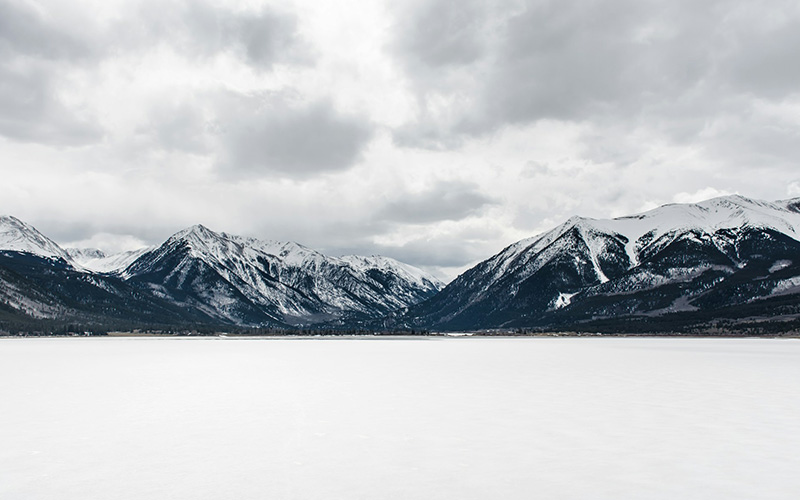
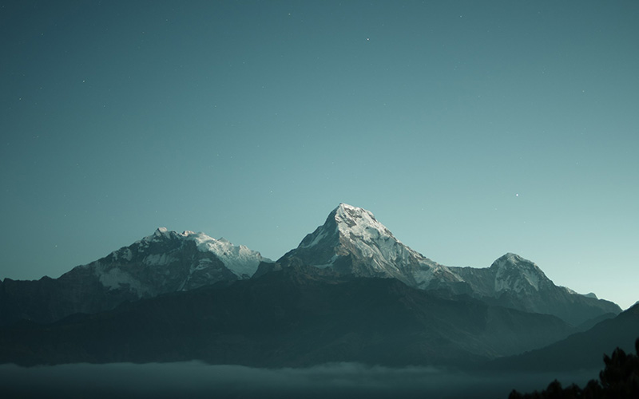
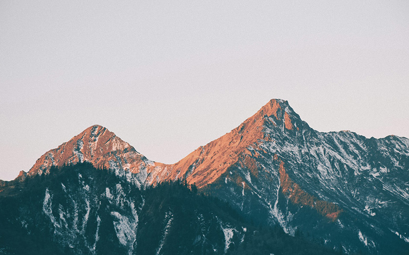
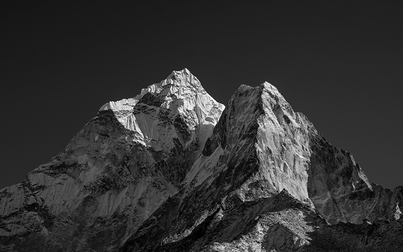
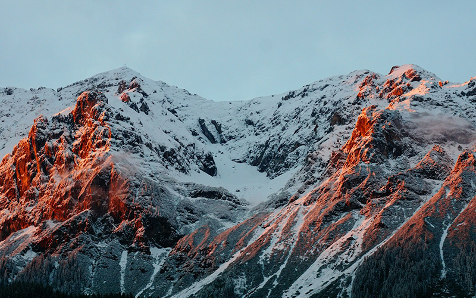
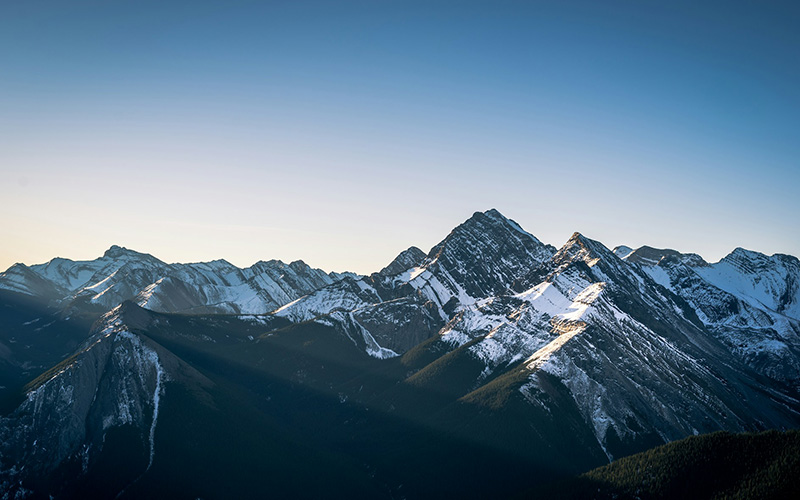
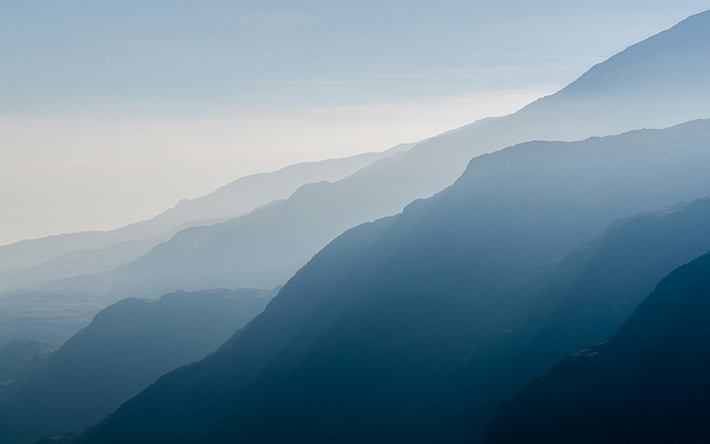
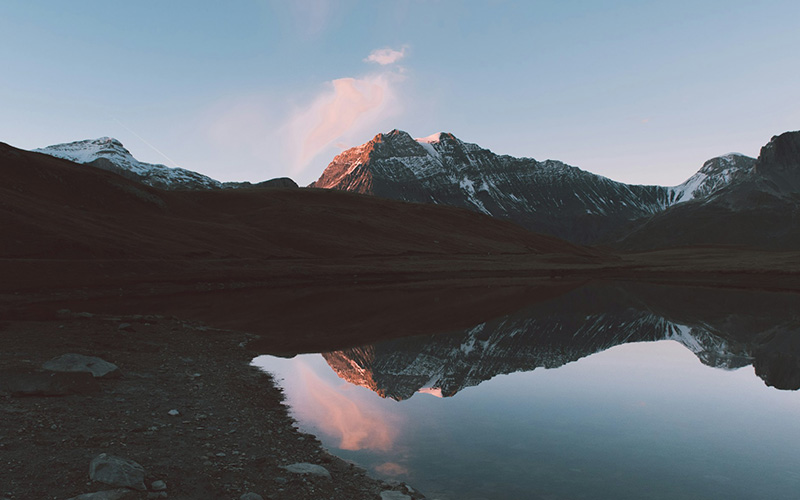
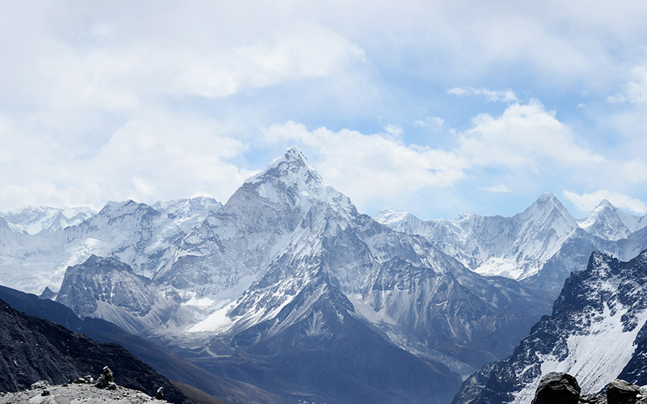
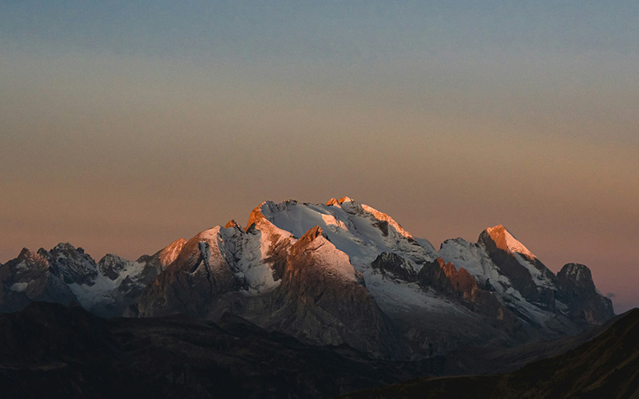

01.

히말라야 산맥
히말라야 산맥은 아시아에 펼쳐진 거대한 산맥으로, 에베레스트를 비롯한 높은 봉우리들이
자리하고 있습니다. 눈과 얼음으로 덮인 산들은 강의 발원지가 되어 주변 지역의 삶을 이어
줍니다. 깊은 계곡과 험준한 능선에는 다양한 자연환경과 문화가 함께 살아 숨 쉽니다.
자세히보기
02.

안데스 산맥
안데스 산맥은 남아메리카 서쪽을 따라 길게 이어지는 산맥입니다. 높은 고원과 화산, 깊은
계곡이 어우러져 다채로운 풍경을 만들어 냅니다. 산맥을 따라 형성된 마을과 유적에는 자연에
적응하며 살아온 사람들의 역사와 문화가 남아 있습니다.
자세히보기
03.

카라코람 산맥
카라코람 산맥은 아시아의 고산 지대에 자리하며, K2를 비롯한 험준한 봉우리와 거대한 빙하로
알려져 있습니다. 날카로운 능선과 깊은 계곡은 웅장한 산악 풍경을 보여 줍니다. 혹독한
자연환경 속에서도 탐험가와 산악인들의 도전이 이어지는 곳입니다.
자세히보기
04.

힌두쿠시 산맥
힌두쿠시 산맥은 아프가니스탄과 파키스탄에 걸쳐 이어지는 산맥입니다. 높은 봉우리와 산길은
오랫동안 지역을 연결하는 통로이자 자연의 경계가 되었습니다. 계곡을 따라 자리한 마을에는
산과 함께 살아온 사람들의 생활과 전통이 이어지고 있습니다.
자세히보기
05.

톈산 산맥
톈산 산맥은 중앙아시아에 펼쳐진 산맥으로, 눈 덮인 봉우리와 초원, 산정 호수가 어우러진
곳입니다. 산에서 흘러내리는 물은 건조한 주변 지역에 소중한 생명수가 됩니다. 계절에 따라
달라지는 풍경은 중앙아시아 산악 지대의 다양한 모습을 보여 줍니다.
자세히보기
06.

쿤룬 산맥
쿤룬 산맥은 티베트 고원 북쪽을 따라 이어지는 거대한 산맥입니다. 건조한 고원과 높은
봉우리가 맞닿아 광활하고 독특한 풍경을 이룹니다. 쉽게 다가가기 어려운 자연환경 속에서
빙하와 산악 생태계가 오랜 시간의 흔적을 간직하고 있습니다.
자세히보기
07.

우랄 산맥
우랄 산맥은 러시아를 남북으로 길게 가로지르며 유럽과 아시아를 나누는 지리적 경계로
알려져 있습니다. 완만한 산지와 숲, 강이 이어져 높은 고산 지대와는 다른 풍경을 보여
줍니다. 풍부한 지하자원과 산림은 주변 지역의 생활과 산업에 영향을 주었습니다.
자세히보기
08.

아틀라스 산맥
아틀라스 산맥은 북아프리카를 가로지르는 거대한 산맥으로, 사막과 초원을 나누는 중요한
자연 경계 역할을 합니다. 높은 산지와 계곡에는 다양한 생태환경이 형성되어 있습니다.
산기슭의 마을에서는 자연에 적응하며 이어 온 지역의 문화와 생활을 만날 수 있습니다.
자세히보기
09.

알프스 산맥
알프스 산맥은 유럽의 자연과 문화를 대표하는 산맥으로, 오랫동안 사람들의 삶과 여행의
중심이 되어 왔습니다. 눈 덮인 봉우리와 빙하, 푸른 초원이 어우러져 사계절마다 다른 풍경을
보여 줍니다. 산과 계곡을 잇는 길을 따라 다양한 지역의 문화가 이어집니다.
자세히보기
10.

로키 산맥
로키 산맥은 북아메리카 서부를 따라 길게 이어지는 거대한 산맥입니다. 높은 봉우리와 맑은
호수, 울창한 숲이 어우러져 웅장한 자연경관을 만들어 냅니다. 다양한 야생동물의 서식지이자
여러 강의 발원지로서 주변 지역의 생태환경에 중요한 역할을 합니다.
자세히보기